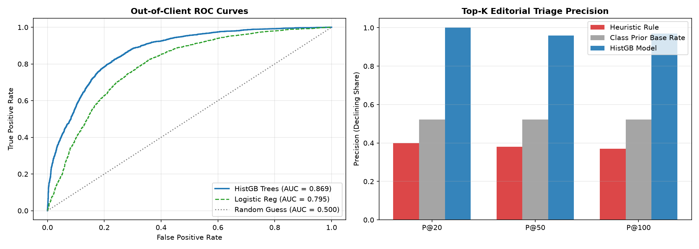

Content decay—the steady erosion of search visibility, impressions, and clicks—represents a primary operational challenge for digital publishers and SEO teams. While search demand continually shifts, editorial bandwidth is strictly constrained. Content teams cannot manually audit thousands of published URLs every month.
Historically, teams rely on rigid heuristic filters (e.g., "refresh any page updated > 180 days ago"). However, empirical analysis demonstrates that such rules yield low editorial precision (38.0% Precision@50), flooding content queues with false alarms. Acting on a false positive consumes 4–8 hours of editorial rewriting on healthy assets, while a false negative allows core high-traffic URLs to decay unnoticed. This paper delivers an evidence-backed triage system that prioritizes URLs based on calibrated decay probabilities and expected exposure at risk.
This research is evaluated on the official gated warehouse release (FlyRank/internship-warehouse), comprising 78,835,655 daily performance rows, 519,606 content dimension records, and 2,414,248 query portfolio entries.
client_hash_id, content_hash_id).priority_score, health_score) and forward-window search metrics were strictly quarantined to guarantee zero circular learning.We extract 11 observable features categorized into three primary signal groups:
imp_prev30), clicks (clk_prev30), CTR (ctr_prev30), and average ranking position (pos_prev30).visible_queries), anonymized share (anon_share), rare search share (rare_share), and top-query concentration (top_query_share).content_age_days), days since update (days_since_last_update), and content type categorization.
Target Definition: A binary label is_declining = 1 indicates an empirical impression contraction greater than 20% in the subsequent 30-day window ($\text{imp\_last30} < 0.80 \times \text{imp\_prev30}$).
Validation Design: To evaluate real-world generalization to new domains, we execute an 80/20 GroupShuffleSplit partitioned strictly by client_hash_id. The training set contains 94,403 pages across 35 clients, while the test set comprises 7,038 pages across 9 completely held-out clients with zero cross-client overlap.
Candidate models were evaluated against the heuristic baseline rule and class prior base rate on the 7,038 held-out client items:
| Model / Approach | ROC-AUC | Brier Score | Precision@20 | Precision@50 | Precision@100 |
|---|---|---|---|---|---|
| Naive Class Prior (Base Rate) | 0.5000 | 0.2495 | 52.2% | 52.2% | 52.2% |
| Heuristic Action Rule Baseline | 0.4183 | — | 40.0% | 38.0% | 37.0% |
| Logistic Regression (Linear) | 0.7949 | 0.1869 | 80.0% | 84.0% | 84.0% |
| Gradient Boosted Trees (HistGB) | 0.8688 | 0.1541 | 100.0% | 96.0% | 97.0% |

Signal Attribution: Permutation importance identified query diversity (visible_queries, importance +0.312) and anonymized query share (anon_share, importance +0.121) as the strongest leading indicators of decay, reflecting vulnerability when ranking visibility narrows.
Predicted probabilities are transformed into an operational queue by weighting decay risk with log-scaled search volume:
Priority Score = P(decline) × log10(impressions + 1).
Code: high_volume_page_one_decay
Condition: $P \ge 0.60$, Page 1 rank ($\text{pos} \le 10$), $\ge 1{,}000$ impressions.
Action: Comprehensive factual update, schema audit, and competitive gap check.
Code: striking_distance_ctr_decay
Condition: $P \ge 0.60$, Striking distance ($\text{pos} \le 20$), $\text{CTR} < 1.0\%$.
Action: Rewrite meta titles and headers to improve click-through conversion.
Code: concentrated_query_risk
Condition: $P \ge 0.60$, $\text{top\_query\_share} \ge 70\%$.
Action: Add subheadings and expand adjacent subtopics to broaden search footprint.
Code: stale_inventory_decay
Condition: $P \ge 0.60$, Days since update $\ge 180$.
Action: Routine copy update, prune outdated statistics, and verify internal links.
All data processing, modeling pipelines, and artifact generation scripts are open-source and reproducible:
work/notebooks/capstone.ipynbgithub.com/aman-data-search/flyrank-internship-ml